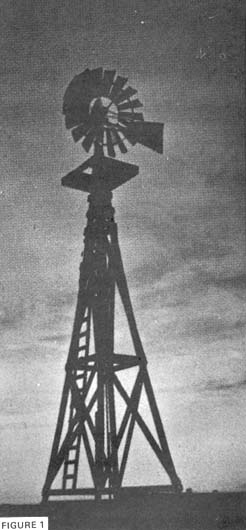
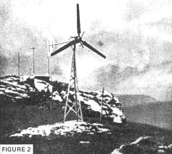
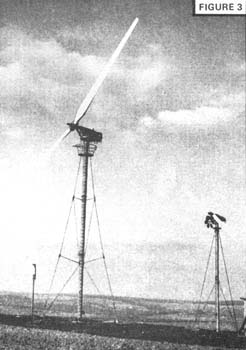
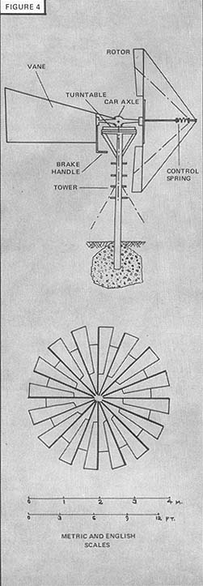
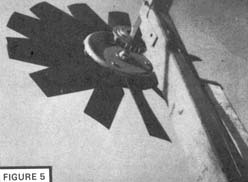
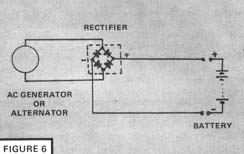
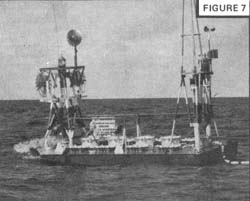
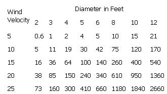
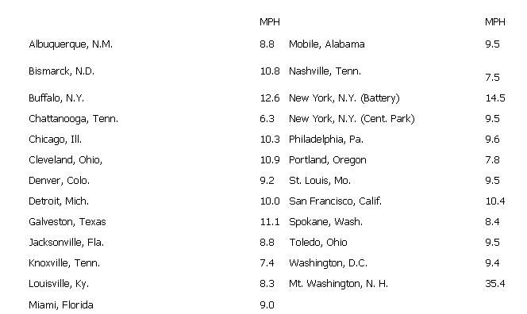

Most people are not aware of the great increase in electric power consumption that has occurred in the last 10 or 20 years and which is now leading to energy shortages and environmental disaster. The trend in power consumption is ever upward and fuel combustion, generating plants and utility lines increasingly mar the landscape in even remote and otherwise unspoiled parts of our land. We must curtail our energy consumption first, then turn to alternate sources of power-such as the wind-if we want to live in tune with nature on this planet.
Before considering the wind as a source of power for your domestic needs, however, you should take a look at the electrical appliances you now have and decide which you consider essential and which are just conveniences. Wind power can be useful, but a very large and expensive windmill would be needed to operate such greedy consumers of electric energy as clothes dryers, space heaters, hot water heaters, electric ranges and large, color TV sets.
If, on the other hand, you can live with reasonably modest lighting, radios, shavers, a small black and white TV, a refrigerator and perhaps an oil burner motor and circulator . . . you may find that the wind can supply all or part of your electric energy needs.
Let me, however, point out some aspects of wind power that must be taken into account before embarking on any such home energy generation project. First and most obvious is the intermittent nature of this resource. Wind power is extracted from the kinetic energy of moving air and the power available from any mill at any given time is proportional to the cube of the wind velocity. Which is to say that if you can get, for example, 160 watts from a mill at a wind speed of 10 mph . . . then you can obtain 1,280 watts when the air velocity is 20 mph (if the generator has the capability), but only 20 watts at a wind speed of 5 mph.
Remember too that-depending on your location-you may find there are long intervals during which the wind will be relatively calm. If this is so, your wind generator will not put out any appreciable power for long periods, during which you'll have to resort either to energy stored in batteries, or to a standby gasoline or diesel-driven generator. If you are fortunate in having a windy site, this will be less of a problem . . . but it cannot be overlooked.
Another aspect to be considered is that of excessive winds, such as a severe storm, hurricane or tornado. Provision must be made for feathering the mills' blades, tilting the attitude of the propeller so that the wind hits the ends and edges of the fan instead of the airfoil surfaces or applying some kind of brake or aerodynamic spoiler. Automatic as well as manual operation of such a device is desirable.
The intermittent nature of wind as an energy source makes it most useful for those applications where the effect or result is easily stored. Pumping water for irrigation or domestic use with power extracted from moving air is a natural. Windmills have been used for this purpose in the Low Countries for many centuries, and were commonly harnessed for the same work on this continent only a few decades ago.- Today such American farm windmills (Figure 1) are found mostly in Amish areas. Elsewhere the machines are often seen in a state of disrepair on abandoned or unused homesteads.
If you're interested in pumping water with wind power you may be able to find an old American farm windmill and refurbish it with new vanes and mechanical parts. Or you can purchase one brand new, as they're still made in a variety of sizes from 6 to 16 ft. in diameter, mounted on steel towers as high as 80 ft. tall, by the Aeromotor Company of Broken Arrow, Oklahoma 74012. The manufacturer gives performance in terms of pumping rate ranging from 100 to 3,000 gallons per hour. Construction is sturdy, self-lubricating, and the designs are dependable through many decades of experience in production and usage. Dempster Industries of Beatrice, Nebraska 68310 and the Heller-Aller Company, Napoleon, Ohio 43545 are two other sources for these water pumping windmills.
The most comprehensive description of a home-built windmill is contained in a report prepared for an organization called Volunteers for International Technical Assistance (College Campus, Schenectady, New York 12308) by a Dr. Bossel of the University of California (see Reference 2). The paper describes a 16-blade mill with a diameter of 4 meters (13 ft.). The machine employs an automobile rear axle and differential as both the shaft and support for the fan . . . and the means for transmitting the mechanical energy to the bottom of the tower.
Detailed descriptions of sheet metal blade construction and regulating mechanism are given in Bossel's report and the only tool required which may not be readily available to most MOTHER readers is welding equipment. Any body and fender shop or blacksmith (check the yellow pages) should have both the necessary equipment and skill, however, or-in lieu of welding-other fastening methods such as screws & nuts or rivets can be used.
This mill is primarily intended for pumping water and doing other mechanical duties rather than for generating electric power. Its tower and elevated turntable platform (see Figure 4) are of wooden construction. The machine's output in a 10 mph breeze is 1/3 horsepower, it produces 1 hp in a wind of 15 mph and over 2-1/2 hp when spun by air moving 20 mph.
But what about electric power generation? Such energy is not easily stored (a bank of automotive-type storage batteries may supply a few hours' needs . . . but then you're either out of power or you crank up a gasoline-driven generator). I would strongly recommend such a gasoline-powered standby unit for any winddriven generator if you want reliable power without tying into the utility line. At some future date, perhaps, the fuel cell will serve as the alternate source, thereby avoiding the noise and pollution problems of the internal combustion engine.
There is a wind-powered generator called the Wincharger available for about $400 from Dyna-Technology, Inc. of Sioux City, Iowa 51102. It uses a 6-ft. two-bladed propeller with a patented air-brake governor to limit its speed in high winds, and comes with a 10-ft. steel tower. Although of small capacity (it produces 20 to 30 kilowatt-hrs. of energy per month and charges a 12-volt battery at rates up to 14 amperes) the unit is very reliable and has been produced for many years. A 7 mph breeze is sufficient to start charging, and full output is reached in a 23 mph wind. For a cabin, campsite, trailer, camper or boat the Wincharger would be adequate to serve the electrical needs of 12-volt lighting, radio, shaver and portable TV.
It should be noted that when 120-volt AC appliances are to be accommodated, an electrical device called an inverter must be used to convert a wind generator's 12-volt DC to the higher AC current. The size and cost of this stationary converter depends on the maximum wattage of the various loads which may be connected at any time and there is a certain loss of power in the inverter (typical efficiency being 80 to 90%).
If you're looking for a windmill which will serve needs up to a few kilowatts, you must consider larger machines. One source for them is Elektro gmbH of Winterthur, Switzerland. This manufacturer's units employ three-bladed propellers ranging from 3.5 to 5.0 meters in diameter with output ratings from 2,000 to 5,000 watts. The equipment produces 110-volt DC current and, as usual, is employed in conjunction with a bank of storage batteries.
The Elektro units are of sophisticated design with blades which may be adjusted or "feathered" to compensate for varying wind speeds. The propeller shaft is coupled to the generator by gears running in an oil bath. As might be expected, the price of these machines runs to several thousand dollars, but-if you add up all your electric bills over a few years-that's not so unreasonable.
And what about building your own wind-driven electric generator? Well I'd advise that you first arm yourself with all the information you can get and ask yourself if your site is suitable. You might even record daily air velocities at your location with an inexpensive wind gauge (F.W. Dwyer of Michigan City, Indiana 46360, sells a small hand-held wind meter for about $9).
Figure that the mill should be situated at a higher level than any obstructions nearer than a few hundred feet. This may require a high tower, or running a line out to a hilltop location. Remember that the power you'll get is strongly dependent on average air speed, so make sure you pick the spot most exposed to prevailing winds.
Next, decide on the approximate-sized machine you need or can readily build, bearing in mind that power output varies as the square of propeller diameter (a 6-ft. diameter propeller yields four times as much power as one of the same design but only 3 ft. across). Construction costs also go up sharply with increased size. With 3 ft. or less, all you can expect to do is trickle charge batteries or carry very small loads such as a single radio or small light. Then again, building and operating a generator of this size might be worthwhile before undertaking a larger unit.
You'll find a 6-ft. diameter mill to be a good practical size if you can really limit your consumption of electricity. Even more useful is a 10 or 12-ft. diameter power plant unless you find the difficulty and costs of construction prohibitive. I would not recommend fabrication of any larger units until some experience is gained with one of these smaller sizes.
Choice of propeller style and design has a strong bearing on the efficiency of a windmill. All modern electric generating mills have two or three very slender blades resembling aircraft propellers (see Figures 2 and 3). Such designs feature a high rip speed ratio which is a comparison between the velocity of the blade tips and the wind speed. Tip speed ratios between 5 and 8 are not uncommon for efficient high-speed mills . . . as compared to the ratios between 1 and 3 which are typical for the slower-running multiblade machines such as the American farm water-pumping windmill. On the other hand, although the latter design is less efficient, its higher starting torque and better performance at low wind velocities gives it a steadier pumping action in light breezes.
Ideally, the propeller of a wind machine used for generating electricity should have a cross-section resembling that of an aircraft wing . . . with a thick, rounded leading edge tapering down to a sharp trailing edge. It should be noted, however, that the most efficient airfoils for aircraft propellers, helicopter blades or contoured fan blades (all designed to move air) are not the most efficient airfoils for windmills (which are intended to be moved by air). An old airplane propeller, in other words, has neither the proper contour nor angle of attack to satisfactorily extract energy from the wind. If you have the ability and time to devote to carving a propeller from wood, however, you'll find good windcharger designs to copy in Reference 1.
The generator itself is of vital importance in any windelectric system. Unfortunately, most generators which would seem to be suitable suffer from the requirement that they be driven at high speeds (most are built to be turned by gasoline engines at 1,500 to 3,600 rpm) and windmills, especially in larger sizes, seldom exceed 300 rpm. This means that one must either find special generators, or resort to step-up gearing to achieve the high rotational speed needed by the generator. Brushless permanent-magnet rotor alternators give reliable, troublefree operation and require no electric power for a field winding but; unfortunately, are hard to come by. One possibility is to adapt an automobile alternator by replacing the field winding in the rotor with a permanent magnet.
On a much smaller scale, there is available at reasonable cost (about $11) a bicycle generator which will produce a useful output of one to two watts at low rotational speeds. This is the English-made Sturmey-Archer Dynohub generator, sold in this country by Raleigh of America, 350 Secaucus, Secaucus, New Jersey 07094. With a 2-ft. diameter propeller it can deliver its rated output without any modification. All that's required is the attachment of propeller blades.
Figure 5 illustrates one unit constructed by the author. For charging a 6-volt automotive battery, a bridge rectifier such as the VARO W111, available from Allied Electronics, or the Motorola MDA 920-2 is used as shown in Figure 6. Either costs about $1.50.
The propeller on the model shown in Figure 5 is the modular construction "Multi-Wing" fan made in Denmark, and sold in the US by ILG Industries. In many respects the design is far from ideal as it is somewhat heavy, expensive and its minimum pitch angle of 30° results in a rather low tip-speed ratio. The Danish fan, however, is rugged, weatherproof, durable and develops plenty of torque-even in a moderate breeze-to overcome the slight cogging effet in the Dynohub generator.
The Dynohub unit is made for use as the hub of a bicycle front wheel and comes equipped with ball bearings and spoke holes . . . which make it possible to construct sheet aluminum or fiberglass blades and secure them to the hub at two points. At the perimeter a bicycle rim can serve as the supporting ring. The Dynohub is available in two models, with holes to accommodate either a 32 or a 36-spoke wheel. One model is suited to 4 or 8-bladed fan and the other to a 3 or 9-bladed propeller.
Practical applications of this design are limited to trickle charging batteries, such as for a boat at a mooring, or for a two-way radio at a remote campsite or cabin.
Inspiration for my Dynohub mill came from a wind-powered generator developed about 1964 by the National Bureau of Standards for use by the Navy or Weather Bureau on the MAMOS automatic weather reporting station. The Tri-GEN wind power units (Figure 7) which supply power to this buoy, use three modified Dynohub generators on the shaft of the windmill to produce a threephase output and reduce cogging effect. Both 30" and 36" 20-bladed mills are used to reach peak outputs close to 7 watts at wind velocities between 23 and 25 knots. Their low tip-speed ratio of 1.7 is typical of mutibladed mills. The propeller blades are fabricated of sheet aluminum and are supported at their tips by a double ring and at half-span by a smaller ring.
The table below gives the theoretical power available from reasonably high-performance (70% efficient) mills such as those having two slender blades with a high tip-speed ratio.
Windmill Power Output in Watts
The above figures are based on a formula given in the six-page section
on wind power in Marks' MECHANICAL ENGINEERS HANDBOOK.
The design of a windmill involves decisions as to the size of the generator as well as the size and style of the propeller or rotor. Since there are no fuel costs, the cost of construction and maintenance are prime considerations and it's best to start with an electric generator of adequate power rating at relatively low speeds (a few hundred rpm).
Once a suitable machine is selected, a decision must be made as to what wind velocity will be necessary to achieve full output of the generator. If you decide to get full electric output at low wind speeds, you'll need a larger propeller . . . whereas a small fan will be adequate if you want full electric output only in very high winds. The question to ask when designing a mill, then, is: how frequently do winds blow with a velocity greater than X mph?
Statistical studies made of wind records at Dayton, Ohio show that each month there is a well-defined group of wind velocities which predominate. These are called the prevalent, or frequent winds. There is also a well-defined group which contains the bulk of the energy each month called, appropriately enough, energy winds. Energy winds blow 2 out of 7 days; prevalent winds 5 out of 7.
Many working wind machines are designed to reach full output in air velocities of 20 to 25 mph, and deliver no appreciable output in breezes of less than 6 or 8 mph. At winds higher than those required for maximum output, governors or spoilers limit the rpm of the mill, thereby throwing away large quantities of energy but protecting the machine against damage. Lack of good performance at low wind velocities is not a serious drawback, since there is very little energy available from the wind at these calm conditions anyway.
Here are some average wind velocities at various locations:
It should be noted that wind velocity will vary considerably even in a local area, as the figures for New York City indicate. At any rate, figures and tables aside, nature has free power available for you to use, without polluting Mother Earth or consuming her resources. Think about harnessing the wind and give it a try . . . you'll like it!
1. PROCEEDINGS OF THE UNITED NATIONS CONFERENCE ON NEW SOURCES OF ENERGY. Volume 7: Wind Power (408 pages), published 1964. UN Sales No. 63.1.41, $3.50 . . . an excellent resource; contains texts of 40 papers presented at the 1961 Rome conference under categories of:
a. Studies of Wind Behaviour and Sites for Wind-driven Plants
b. The Design and Testing of Wind Power Plants
c. Recent Developments and Potential Improvements in Wind Power Utilization
2. LOW-COST WINDMILL FOR DEVELOPING NATIONS by Dr. Hartmut Bossel, Mechanical Engineering Dept., Univ. of California at Santa Barbara 93106 . . . a 35-page report prepared for Volunteers for International Technical Assistance (VITA), College Campus, Schenectady, N.Y. 12308.
This report describes construction of a 13-ft. diameter mill using readily available materials and basic tools.
3. Marks' STANDARD HANDBOOK FOR MECHANICAL ENGINEERS, Theodore Baumeister, Editor . . . contains a 6page section by E.N. Fales on wind power; chock full of vital information. Check it out at your library.
4. ALTERNATE SOURCES OF ENERGY - a new publication privately produced by Donald Marier of 300 S. Taylor Ave., Oak Park, Ill. 60302 . . . the Sept. 1971 issue contains an extensive bibliography on wind, solar, tidal, and geothermal energy.
|
 |
 |
 |
|
 |
 |
 |
|
 |
 |
 |